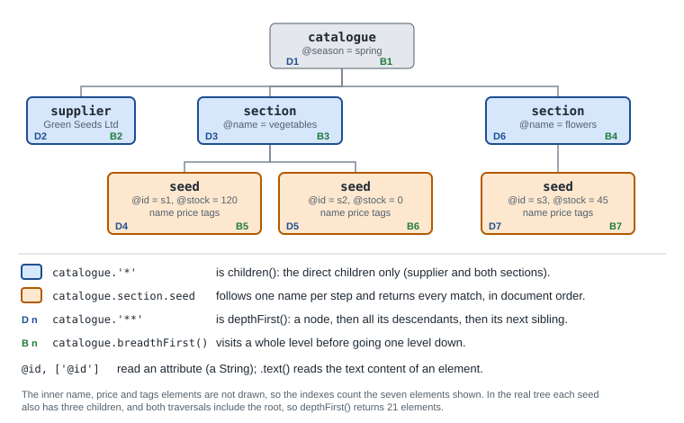

XML Parsing, GPath & Security
|
This content was generated with the assistance of AI and should be verified against the official documentation before being relied on in production. |
This page is written against Apache Groovy 6.0 (6.0.0, 2026-09-22) and every example was run with Groovy 6.0.0 on JDK 26
(checked on 2026-10-14). XML support lives in the optional groovy-xml module, which the groovy command already has on its
classpath; in a Gradle or Maven build it is a separate dependency (see
Build Tools: Gradle, Maven & Ant). This page reads
XML: it compares the two parsers, walks the tree with GPath, and explains what Groovy 6.0 blocks by default when the input is not
trustworthy. Writing and editing XML, MarkupBuilder and typed conversion are on
XML: Creating & Manipulating. The same GPath idea applied to
collections is on Working with Collections, and the JSON
counterpart of this page is JSON.
All the examples read one file, data/catalogue.xml, the seed catalogue of the greenhouse: a supplier, two sections and three
seeds, each seed with an id and stock attribute, a name, a price and a list of tags.
<?xml version="1.0" encoding="UTF-8"?>
<catalogue season="spring">
<supplier id="sup1">Green Seeds Ltd</supplier>
<section name="vegetables">
<seed id="s1" stock="120">
<name>Tomato</name>
<price currency="EUR">2.50</price>
<tags><tag>fruit</tag><tag>warm</tag></tags>
</seed>
<seed id="s2" stock="0">
<name>Basil</name>
<price currency="EUR">1.80</price>
<tags><tag>herb</tag></tags>
</seed>
</section>
<section name="flowers">
<seed id="s3" stock="45">
<name>Marigold</name>
<price currency="EUR">1.20</price>
<tags><tag>companion</tag><tag>warm</tag></tags>
</seed>
</section>
</catalogue>Neither XmlParser nor XmlSlurper is imported by default: Groovy imports groovy.util.* but the XML classes are in
groovy.xml, so add import groovy.xml.XmlParser, import groovy.xml.XmlSlurper (or import groovy.xml.*). Without it the
compiler reports unable to resolve class XmlSlurper. The snippets omit the imports after the first one, and Node and
NodeList need none because they are in groovy.util.
XmlParser versus XmlSlurper
Both classes read XML with a SAX parser, so both have a low memory footprint while parsing, and both give you GPath navigation over the result. They differ in what they return.
import groovy.xml.XmlParser
import groovy.xml.XmlSlurper
def xml = new File('data/catalogue.xml').text
def slurped = new XmlSlurper().parseText(xml)
def parsed = new XmlParser().parseText(xml)
println slurped.getClass().name
println parsed.getClass().name
println slurped.name()
println parsed.name()
println slurped.section[0].seed[0].name == 'Tomato'
println slurped.section[0].seed[0].name.text()
println parsed.section[0].seed[0].name.text()
println parsed.section[0].seed[0].name
println parsed.section[0].seed[0].name.getClass().name
println slurped.section.seed.size()
println parsed.section.seed.size()
println parsed.supplier.text()
println parsed.supplier[0].name()groovy.xml.slurpersupport.NodeChild
groovy.util.Node
catalogue
catalogue
true
Tomato
Tomato
[name[attributes={}; value=[Tomato]]]
groovy.util.NodeList
3
3
Green Seeds Ltd
supplierXmlSlurper.parseText returns a NodeChild, which is a GPathResult: a lazily evaluated view of the document. XmlParser
returns a groovy.util.Node, a plain in-memory tree node, and a child access such as parsed.section[0].seed[0].name is a
NodeList (a List of Node), which is why printing it shows the node structure and why == 'Tomato' is only true on the
slurper side: GPathResult compares by its text, a NodeList is a list. On a Node use text(), attribute('id'), @id,
children() and name(); on a GPathResult use text(), @id, children(), name() and parent(). Even the way GPath
expressions are written is the same for both, which is the point of the next sections.
XmlSlurper |
XmlParser |
|
|---|---|---|
Result type |
|
|
Evaluation |
Lazy: path expressions are evaluated when you read them |
Eager: the whole tree is built while parsing |
Memory |
Parses with SAX and keeps a compact structure |
Parses with SAX and builds a full node tree |
Changes |
Queued: new nodes are only visible after the document is evaluated again |
Immediate: a new node can be read right away |
Best for |
Reading a few values, or transforming one document into another |
Reading and updating the same tree |
The official documentation gives the same guidance: choose the slurper to read a few nodes or to turn one document into another, and the parser when you update and read the same tree at once. Editing, and the reason a slurper edit is not visible until you parse again, are covered on XML: Creating & Manipulating.
Parser options
Both constructors take Groovy named parameters, so you do not have to remember a positional order of booleans.
| Option | Meaning | Default |
|---|---|---|
|
Enable XML namespace handling |
|
|
Validate documents against a DTD |
|
|
Allow |
|
|
Preserve whitespace before elements |
|
|
Trim whitespace around element text |
|
def doc = '<root>\n <item> value </item>\n <!-- c -->\n</root>'
def p1 = new XmlParser()
println "[" + p1.parseText(doc).item.text() + "]"
def p2 = new XmlParser(trimWhitespace: true)
println "[" + p2.parseText(doc).item.text() + "]"
def s = new XmlSlurper(keepIgnorableWhitespace: true)
println "[" + s.parseText(doc).text() + "]"
def s2 = new XmlSlurper()
println "[" + s2.parseText(doc).text() + "]"
// options are fixed after the first parse
def p = new XmlParser()
p.parseText('<a/>')
try { p.namespaceAware = false } catch (e) { println e.class.simpleName + ': ' + e.message }
// the positional constructor: validating, namespaceAware, allowDocTypeDeclaration
def q = new XmlParser(false, true, true)
println q.allowDocTypeDeclaration[ value ]
[value]
[
value
]
[ value ]
IllegalStateException: namespaceAware must be set before parsing
trueThe options that configure the underlying SAX parser (namespaceAware, validating, allowDocTypeDeclaration) can only be
set before the first parse call; afterwards the property setter throws IllegalStateException, as shown. Create one parser
per configuration and reuse it, instead of flipping a property between documents.
GPath
GPath is the path-expression idea built into Groovy property access: a.b.c means "every c under every b under a`". For
XML it plays the role XPath plays elsewhere, and it also works over plain objects and collections. The figure shows the catalogue
tree down to the seed level, with the nodes that the main steps select and the order in which `** and breadthFirst()
visit them.

Elements, attributes and text
A dotted name selects the child elements with that name, and repeating the step walks down. Because a name can match several
siblings, the result is a collection even when one element matches; text() joins the text of everything selected, and
*.text() (the spread-dot, see Object Operators) collects the texts
one by one. An attribute is read with @name or ['@name']; it returns a String, so convert it when you need a number.
import groovy.xml.XmlSlurper
def catalogue = new XmlSlurper().parseText(new File('data/catalogue.xml').text)
println catalogue.section.seed.name*.text()
println catalogue.@season
println catalogue.section.seed*.@id
println catalogue.section[0].seed[0]['@stock'].toInteger()
println catalogue.section.seed.findAll { it.@stock.toInteger() > 0 }*.name*.text()
println catalogue.section.find { it.@name == 'flowers' }.seed.name
println catalogue.section.seed.price.collect { it.text() as BigDecimal }.sum()
println catalogue.section.seed.price.@currency.text()
println catalogue.section.seed.price.@currency.size()[Tomato, Basil, Marigold]
spring
[s1, s2, s3]
120
[Tomato, Marigold]
Marigold
5.50
EUREUREUR
3Source: Groovy documentation: GPath
Note the last two lines: price.@currency is one attribute per price element, so text() glues the three values together
while size() still counts three. The methods that filter and transform the result (findAll, find, collect, sum) are the
ordinary GDK methods described on Working with Collections;
inside their closures it is one element.
Children, depthFirst and breadthFirst
* is a shortcut for children(): the direct children of the node, whatever their names. ** is a shortcut for
depthFirst(): the node and everything under it. Use ** when you know what you are looking for but not where it is, which is
what // does in XPath. breadthFirst() selects the same nodes as ** but in a different order.
println catalogue.section[0].'*'.collect { it.name() }
println catalogue.children().collect { it.name() }
println catalogue.'**'.findAll { it.name() == 'tag' }*.text()
println catalogue.'**'.find { it.name() == 'price' && it.text() == '1.80' }.parent().name
println catalogue.'**'.find { it.text() == 'Marigold' }.parent().@id
println catalogue.depthFirst().size()
def label = { it.name() + (it.@id.text() ? '#' + it.@id : '') }
def nodes = ['seed', 'name', 'section']
println 'depthFirst : ' + catalogue.depthFirst().findAll { it.name() in nodes }
.collect { it.name() == 'name' ? it.text() : label(it) }
println 'breadthFirst: ' + catalogue.breadthFirst().findAll { it.name() in nodes }
.collect { it.name() == 'name' ? it.text() : label(it) }[seed, seed]
[supplier, section, section]
[fruit, warm, herb, companion, warm]
Basil
s3
21
depthFirst : [section, seed#s1, Tomato, seed#s2, Basil, section, seed#s3, Marigold]
breadthFirst: [section, section, seed#s1, seed#s2, seed#s3, Tomato, Basil, Marigold]The two traversals return the same nodes in different orders: depth first descends into a section and its seeds before the next
section, while breadth first finishes a level before going down. depthFirst().size() is 21 because the root and every element
count; text is not a node. In the two find lines parent() goes one level up, so .parent().name is the name child of the
seed that owns that price, and .parent().@id is that seed’s id. On a Node the same expressions work: '**',
depthFirst() and breadthFirst() return the element nodes (21 for the catalogue), and attribute('id'), attributes() and
@id read attributes.
Source: Groovy documentation: GPath
Namespaces
By default both parsers are namespace aware, but an unqualified name in a GPath expression matches by local name, whatever its namespace. To tell two namespaces apart declare a prefix on the result and use it in the expression, or switch namespace handling off and treat the prefixed name as an ordinary name.
def ns = '''<g:catalogue xmlns:g="urn:greenhouse:catalogue" xmlns:x="urn:other">
<g:seed id="s1"><g:name>Tomato</g:name><x:name>decoy</x:name></g:seed>
</g:catalogue>'''
def plain = new XmlSlurper().parseText(ns)
println plain.seed.name.text()
println plain.namespaceURI()
def nsAware = new XmlSlurper().parseText(ns).declareNamespace(g: 'urn:greenhouse:catalogue', x: 'urn:other')
println nsAware.'g:seed'.'x:name'.text()
def off = new XmlSlurper(namespaceAware: false).parseText(ns)
println off.'g:seed'.'g:name'.text()Tomatodecoy
urn:greenhouse:catalogue
decoy
TomatoThe first expression matched both name elements, which is the trap: a document that mixes vocabularies needs the prefix
declarations. declareNamespace takes a map of prefix to URI, and the prefixes you declare are yours, not necessarily the ones
the document uses.
Source: Groovy documentation: GPath
Secure by default (Groovy 6.0)
XML parsers have a long history of being attacked through the document itself, and Groovy 6.0 changes its defaults accordingly: its XML parsers and serializer are secure by default. The attacks are worth naming, because the defaults only make sense next to them.
-
XXE (XML external entity). A
DOCTYPEcan declare an entity that points at afile:orhttp:location; when the document refers to that entity the parser reads the file or fetches the URL and puts the content in the document, which can leak local files or make the server call a URL of the attacker’s choice. -
Billion laughs. A
DOCTYPEcan define entities that expand into entities that expand into entities, so a few hundred bytes of input produce gigabytes of text in memory. -
External resource disclosure. An external DTD, a schema
importor an XSLTimportmakes the processor fetch something from a location the document names.
The Groovy 6.0 defaults, as the documentation lists them, are:
| API | DOCTYPE declarations |
External resource access |
|---|---|---|
|
Rejected ( |
Blocked through |
|
Rejected |
Blocked |
|
Rejected |
Blocked |
|
Rejected (the factory is hardened) |
Blocked |
|
Rejected ( |
External DTDs and stylesheets blocked |
The next script feeds an XXE payload and a billion-laughs payload to each entry point. The XXE entity points at a local file, nothing leaves the machine.
import groovy.xml.*
def xxe = '''<?xml version="1.0"?>
<!DOCTYPE catalogue [ <!ENTITY secret SYSTEM "file:///etc/hostname"> ]>
<catalogue><note>&secret;</note></catalogue>'''
def bomb = '''<?xml version="1.0"?>
<!DOCTYPE lolz [
<!ENTITY a "aaaaaaaaaa">
<!ENTITY b "&a;&a;&a;&a;&a;&a;&a;&a;&a;&a;">
<!ENTITY c "&b;&b;&b;&b;&b;&b;&b;&b;&b;&b;">
]>
<lolz>&c;</lolz>'''
def attempt = { String label, Closure c ->
try { println "$label -> ${c()}" }
catch (Exception e) { println "$label -> ${e.class.simpleName}: ${e.message.readLines().first().take(110)}" }
}
attempt('XmlParser xxe ') { new XmlParser().parseText(xxe).note.text() }
attempt('XmlSlurper xxe ') { new XmlSlurper().parseText(xxe).note.text() }
attempt('XmlParser bomb') { new XmlParser().parseText(bomb).text().size() }
attempt('DOMBuilder xxe ') { DOMBuilder.parse(new StringReader(xxe)).documentElement.textContent }
attempt('XmlUtil.serialize') { XmlUtil.serialize(xxe).size() }XmlParser xxe -> SAXParseException: DOCTYPE is disallowed when the feature "http://apache.org/xml/features/disallow-doctype-decl" set to true.
XmlSlurper xxe -> SAXParseException: DOCTYPE is disallowed when the feature "http://apache.org/xml/features/disallow-doctype-decl" set to true.
XmlParser bomb -> SAXParseException: DOCTYPE is disallowed when the feature "http://apache.org/xml/features/disallow-doctype-decl" set to true.
DOMBuilder xxe -> SAXParseException: DOCTYPE is disallowed when the feature "http://apache.org/xml/features/disallow-doctype-decl" set to true.
XmlUtil.serialize -> GroovyRuntimeException: org.xml.sax.SAXParseException; lineNumber: 3; columnNumber: 26; External Entity: Failed to read external documThe JDK parser also writes a line starting with [Fatal Error] to standard error for each failure. The last line shows that
XmlUtil.serialize on a String stopped as well, here at the external entity; the message is cut by the take(110) in the
script. On JDK 26 XmlUtil.serialize additionally printed two lines on standard error, from
groovy.xml.FactorySupport warnHardeningNotApplied: WARNING: Unable to apply XML security setting 'http://apache.org/xml/features/disallow-doctype-decl'=true on com.sun.org.apache.xalan.internal.xsltc.trax.TransformerFactoryImpl,
then the JDK’s reason and "the factory may be more permissive than intended". Groovy 6 applies each hardening setting to every
XML factory on a best-effort basis and logs, instead of failing, when the JDK factory does not support one, which is covered under
Notes for advanced users. The same warning appears on every XmlUtil.serialize call, including harmless ones, and it does not
change the result: here the external entity was still refused, and a normal document is serialized exactly as without it. It is
logged through java.util.logging by the groovy.xml.FactorySupport logger, so raising that logger’s level to SEVERE silences
it (a verified way to do this is shown on
XML: Creating & Manipulating).
Relaxing the defaults
Three knobs cover the legitimate cases, and each opts in explicitly. Turn them on only for input you trust.
-
allowDocTypeDeclaration, a constructor parameter, a settable property (before the first parse) or the third argument of the positional constructor, permitsDOCTYPEdeclarations. It also exists onDOMBuilder.parseandDOMBuilder.newInstanceand onXmlUtil.newSAXParser. -
An
EntityResolver, set on the parser, decides what an external reference resolves to.XmlSlurperalso hassetEntityBaseUrlfor a fixed base. Resolve against a known location such as the classpath, never the network. -
SerializeOptions.allowExternalResources, withallowDocTypeDeclaration, forXmlUtil.serializewhen an XSLT document legitimately imports or includes another one.
import org.xml.sax.InputSource
def internal = '''<?xml version="1.0"?>
<!DOCTYPE catalogue [ <!ENTITY supplier "Green Seeds Ltd"> ]>
<catalogue><supplier>&supplier;</supplier></catalogue>'''
def bomb = '''<?xml version="1.0"?>
<!DOCTYPE lolz [
<!ENTITY a "aaaaaaaaaa">
<!ENTITY b "&a;&a;&a;&a;&a;&a;&a;&a;&a;&a;">
<!ENTITY c "&b;&b;&b;&b;&b;&b;&b;&b;&b;&b;">
<!ENTITY d "&c;&c;&c;&c;&c;&c;&c;&c;&c;&c;">
<!ENTITY e "&d;&d;&d;&d;&d;&d;&d;&d;&d;&d;">
<!ENTITY f "&e;&e;&e;&e;&e;&e;&e;&e;&e;&e;">
<!ENTITY g "&f;&f;&f;&f;&f;&f;&f;&f;&f;&f;">
]>
<lolz>&g;</lolz>'''
// xxe and attempt are from the previous script
attempt('internal entity, relaxed') { new XmlSlurper(allowDocTypeDeclaration: true).parseText(internal).supplier.text() }
attempt('internal entity, positional ctor') { new XmlParser(false, true, true).parseText(internal).supplier.text() }
attempt('external entity, relaxed') { new XmlSlurper(allowDocTypeDeclaration: true).parseText(xxe).note.text() }
attempt('bomb, relaxed') { new XmlSlurper(allowDocTypeDeclaration: true).parseText(bomb).text().size() }
def resolver = new XmlSlurper(allowDocTypeDeclaration: true)
resolver.entityResolver = { publicId, systemId ->
println "resolver asked for: $systemId"
new InputSource(new StringReader('trusted'))
}
attempt('external entity, resolver') { resolver.parseText(xxe).note.text() }internal entity, relaxed -> Green Seeds Ltd
internal entity, positional ctor -> Green Seeds Ltd
external entity, relaxed -> SAXParseException: External Entity: Failed to read external document 'hostname', because 'file' access is not allowed d
bomb, relaxed -> SAXParseException: JAXP00010001: The parser has encountered more than "2500" entity expansions in this document; this i
resolver asked for: file:///etc/hostname
external entity, resolver -> trustedAllowing the DOCTYPE is a smaller step than it sounds: internal entities work, but the external one is still refused because the
JDK’s secure-processing limits stay on, and the expansion bomb still fails once the parser exceeds its entity-expansion limit
(the default of 2500 shown in the message). Only a resolver you write can return content for an external reference, and
here it returns a constant string. The resolver receives the systemId the document asked for, which is the place to
accept a known name and reject everything else.
The default is itself a change to be aware of: before 6.0 these parsers accepted a DOCTYPE and bare JDK factories were returned
by the helper methods, so an application that parsed documents with a DTD needs allowDocTypeDeclaration: true after upgrading.
See What’s New & Migrating from Older Versions.
Hardened factories
When you go below Groovy’s APIs and use JAXP directly, groovy.xml.FactorySupport returns factories that already carry
the hardening recipe: createDocumentBuilderFactory(), createSaxParserFactory(), createXMLInputFactory() (StAX),
createTransformerFactory(allowDocType, allowExternal), createSchemaFactory(...) and createXPathFactory(). The overloads
that take true allow DOCTYPE. In 6.0 the zero-argument createDocumentBuilderFactory() and createSaxParserFactory() are
the hardened ones, where earlier versions returned bare JDK factories.
import groovy.xml.FactorySupport
def flag = 'http://apache.org/xml/features/disallow-doctype-decl'
println FactorySupport.createDocumentBuilderFactory().getFeature(flag)
println FactorySupport.createDocumentBuilderFactory(true).getFeature(flag)
println FactorySupport.createSaxParserFactory().getFeature(flag)
println FactorySupport.createDocumentBuilderFactory().getFeature(javax.xml.XMLConstants.FEATURE_SECURE_PROCESSING)true
false
true
trueThe documentation recommends verifying that hardening took effect by reading the setting back with getFeature or
getProperty, exactly as above, because the individual setFeature calls are wrapped in try/catch blocks.
Streaming large documents
XmlParser and XmlSlurper are the right tools for documents that fit in memory. For a very large feed, XmlUtil.streamElements
reads the document with StAX and hands you each matching element as a small, complete DOM node, so memory is bounded by one
record. XmlUtil.events gives the raw javax.xml.stream.events.XMLEvent stream over a hardened XMLInputFactory.
import groovy.xml.*
import groovy.xml.dom.DOMCategory
def xml = new File('data/catalogue.xml')
def seen = []
xml.withReader { reader ->
XmlUtil.streamElements(reader, 'seed').forEach { org.w3c.dom.Node seed ->
use(DOMCategory) { seen << "${seed.'@id'}:${seed.name.text()}:${seed.price.text()}" }
}
}
println seen
xml.withReader { reader ->
def kinds = XmlUtil.events(reader).map { it.eventType }.toList()
println kinds.size() + ' events, first five types: ' + kinds.take(5)
}[s1:Tomato:2.50, s2:Basil:1.80, s3:Marigold:1.20]
77 events, first five types: [7, 1, 4, 1, 4]The event types are the constants of XMLStreamConstants: 7 is the start of the document, 1 a start tag and 4 character data
(whitespace between elements). A namespace-qualified overload takes the namespace URI and the local name, and a four-argument
overload takes allowDocTypeDeclaration when the feed needs a DTD. The stream is lazy, so it can be consumed on the fly;
the official page shows sinking each record into a virtual-thread executor on JDK 21 and later (see
Java Virtual Threads). The run above also logged a WARNING from
FactorySupport that the Woodstox StAX implementation on the Groovy distribution’s classpath does not recognise the
accessExternalSchema property; it is the best-effort behaviour described next.
Notes for advanced users
The helpers that apply the hardening, XmlUtil.setFeatureQuietly and the equivalent code inside FactorySupport, silently ignore
a feature the JAXP provider does not know, which is why the warnings above are logged rather than thrown. If you ship a custom
JAXP provider that does not implement FEATURE_SECURE_PROCESSING, hardening is best effort and the factory may fall back to the
provider’s defaults. On the stock JDK the defaults already block XXE, entity expansion and external resource access.
For the narrow case of a non-JDK provider on the classpath, the documentation suggests optionally adding Apache Commons Secure XML
(Groovy does not depend on it), whose floor is that external references resolve to empty content on any provider, and injecting
its parser into the Groovy classes: new XmlSlurper(SecureSAXParserFactory.newInstance().newSAXParser()) or
new DOMBuilder(SecureDocumentBuilderFactory.newInstance().newDocumentBuilder()). Injection applies only to parsers you
construct yourself, since new XmlParser() and XmlUtil keep using Groovy’s own factories, and it bypasses Groovy’s factory
configuration, so the element-depth bound jdk.xml.maxElementDepth is yours to set. This was not run here: it needs that
library. Likewise SchemaFactory instances from FactorySupport.createSchemaFactory enable secure processing but leave
ACCESS_EXTERNAL_SCHEMA unset, so that a schema can import from a trusted location; set it to the empty string if your schemas
never import.
DOMCategory and XPath
A third way to read XML keeps Java’s own DOM and adds GPath on top of it. DOMBuilder.parse returns a org.w3c.dom.Document
(with the same secure defaults as above), and inside use(DOMCategory) { ... } the DOM classes gain property access, @attr
lookup, size(), and **. The category applies only within the closure (see
Metaclasses, ExpandoMetaClass & Categories).
Choose it when another library hands you a DOM tree.
import groovy.xml.*
import groovy.xml.dom.DOMCategory
def doc = DOMBuilder.parse(new FileReader('data/catalogue.xml'))
def root = doc.documentElement
use(DOMCategory) {
println root.'@season'
println root.section.size()
println root.section.seed.size()
println root.section.seed.name*.text()
println root.section[0].seed.findAll { it.'@stock'.toInteger() > 0 }.collect { it.'@id' }
println root.'**'.findAll { it.nodeName == 'tag' }*.text().unique().sort()
println root.section.find { it.'@name' == 'flowers' }.seed.name.text()
}spring
2
3
[Tomato, Basil, Marigold]
[s1]
[companion, fruit, herb, warm]
MarigoldWhen a query is easier to state as XPath, use the JDK’s javax.xml.xpath on the same DOM. Groovy has no XPath of its own,
and its GPath replaces most of what the book-era code needed XPath for.
import javax.xml.xpath.*
def xpath = XPathFactory.newInstance().newXPath()
println xpath.evaluate('/catalogue/@season', doc)
println xpath.evaluate('count(//seed)', doc)
def nodes = xpath.evaluate('//seed[@stock > 0]/name', doc, XPathConstants.NODESET)
println nodes.length
println((0..<nodes.length).collect { nodes.item(it).textContent })
println xpath.evaluate("//section[@name='flowers']/seed/price", doc)spring
3
2
[Tomato, Marigold]
1.20XmlUtil
groovy.xml.XmlUtil is the toolbox that sits next to the parsers: serialize writes any of a String, a Node, a
GPathResult or a DOM node as indented XML, and escapeXml and escapeControlCharacters make text safe to embed.
import groovy.xml.*
def seed = new XmlSlurper().parseText(new File('data/catalogue.xml').text).section[0].seed[0]
println XmlUtil.serialize(seed)
println XmlUtil.escapeXml('Tom & "Jerry" <b>')
println XmlUtil.escapeControlCharacters("a\u0001b")<?xml version="1.0" encoding="UTF-8"?><seed id="s1" stock="120">
<name>Tomato</name>
<price currency="EUR">2.50</price>
<tags>
<tag>fruit</tag>
<tag>warm</tag>
</tags>
</seed>
Tom & "Jerry" <b>
abserialize also accepts a SerializeOptions (encoding, indent, allowDocTypeDeclaration, allowExternalResources); the
options and the printing of nodes are shown on
XML: Creating & Manipulating. Reading files, URLs and
streams into these parsers uses the methods of
Files I/O & Paths. Fetching an XML response over HTTP is on
HTTP Client with HttpBuilder.
Source: Groovy documentation: XmlUtil
Where the book is outdated
The Manning book Groovy in Action (publisher page in the references) introduced XmlParser, XmlSlurper, GPath and the DOM
category, and the ideas are still right. Check these points against the current documentation:
-
The classes moved: up to Groovy 3.x they lived in
groovy.util(groovy.util.XmlParser,groovy.util.XmlSlurper). On 6.0 those names do not exist, and the classes aregroovy.xml.XmlParserandgroovy.xml.XmlSlurperfrom thegroovy-xmlmodule, so listings need animport groovy.xml.*. -
Parsers are secure by default since 6.0: a document with a
DOCTYPEis rejected, which the book never needed to say. -
Named parameters for parser options,
XmlUtil.streamElements,XmlUtil.eventsandFactorySupportdid not exist. -
The XML-RPC and SOAP parts of the book’s web-services material are not covered here; use plain HTTP and XML (see HTTP Client with HttpBuilder).
-
Baselines: Groovy 6.0 needs JDK 17 or later.